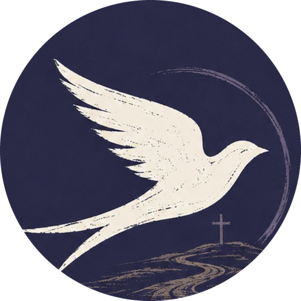
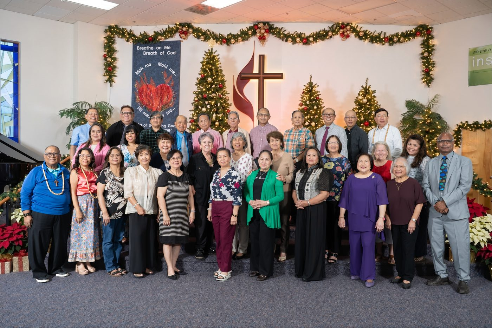
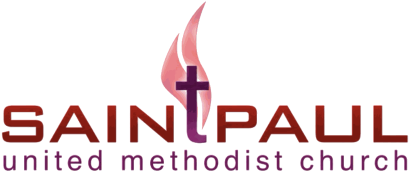

Quality engineering leadership
Senior Engineering Manager · QualityWhat I do
I set the direction for quality at fintech and life-sciences companies. That means building the teams, strategy, and platforms that let engineers ship quickly without breaking trust. I've led orgs of up to 25 people, managers included.
- ~70%
Backlog cut in two weeks with "Bugs IQ," an AI-assisted bug triage program I directed.
- 5–10 → 1–2 days
Shorter release cycles, from investing in automation and a quality-first culture.
- LLM evaluation
My team evaluated LLM output for Intuit Assist, and I co-led strategy for the "Quality Engine" platform.
Where I've done it
- Intuit Credit KarmaSenior Engineering Manager, Quality Engineering · 2022–2026
- Medidata SolutionsSr. Test Engineer → Senior Manager, Test Engineering · 2018–2022
- Capital OneAutomation Team Lead → Manager, Quality Engineering · 2015–2018
- ComplianceEase2013–2015
- MobiTV2011–2013
B.S. Physiology, San Francisco State University.
Full history on LinkedIn ↗Conference speaking
Appium Conference, the first conference dedicated to the Appium mobile automation project.
TestBash San Francisco, co-presented with Charlotte Bersamin.
Watch on Ministry of Testing ↗GDG Philippines DevFest, presented to the Google Developer Groups community.
PLAG Ministries
PresidentFounded in memory of my grandparents, Bishop and Mrs. Paul Locke A. Granadosin
My grandfather was the first Filipino elected "Bishop for Life," and he led the United Methodist Church of the Philippines through Martial Law. PLAG Ministries carries his work forward. We care for retired pastors, deaconesses, and church workers who have no pension, and we prepare the next generation of ministry leaders.
- CornerstoneMinisterial aid and care: living, medical, and surviving-spouse support
- Investing ForwardEducational and leadership grants for ministry students
- Living ArchiveOral history, archival work, and publications

“Faith that gets its boots muddy.”
Bishop in the Muddy Boots. 100% of net proceeds go to the aid programs.
St. Paul United Methodist Church
Webmaster · SPUMC, Fremont

“All are welcome, and we mean that.”
St. Paul is a majority-Filipino, multicultural congregation in Fremont that has worshiped together since 1964. I run its digital front door. I built and maintain the church website and the site for Precious Time Christian Preschool, with a content system that lets staff update pages without code.
belongatstpaul.org ↗Including 50–60 children every Sunday.
Six decades of ministry in the East Bay.
The church site and the preschool site, each with its own CMS.
HMCAF-USCAN
WebmasterDeaconess alumnae, from British Columbia to Texas
Since 1999, HMCAF-USCAN has brought together Harris Memorial College alumnae across North America for fellowship and service, and to support the college and its student deaconesses. Its programs include Balikbayan Box drives that ship books, school supplies, and toys back to the college.
As webmaster, I build and maintain the federation's website and event tools, so its 12 chapters have one place to gather.
hmcaf-uscan.org ↗“Servant-Leadership, empowered by the Holy Spirit.”
Chapters
Established
Moment.Us Bay Area
Owner & Software Engineer · SF Bay AreaNot the photo booth you remember. Engineered for the event you're actually hosting.
I run the Bay Area market for Moment.Us, a photo booth company for corporate events, brand activations, conferences, galas, and celebrations. I also write the software. We don't hand every client the same booth with a new logo. Each activation is built around the event: its brand, its guests, and its goals.
Custom capture, layout, print, and sharing software that runs the booth experience.
Brand activations designed and built for each client, not pulled from a template.
The same quality-engineering rigor I bring to my day job, so the booth works all night.